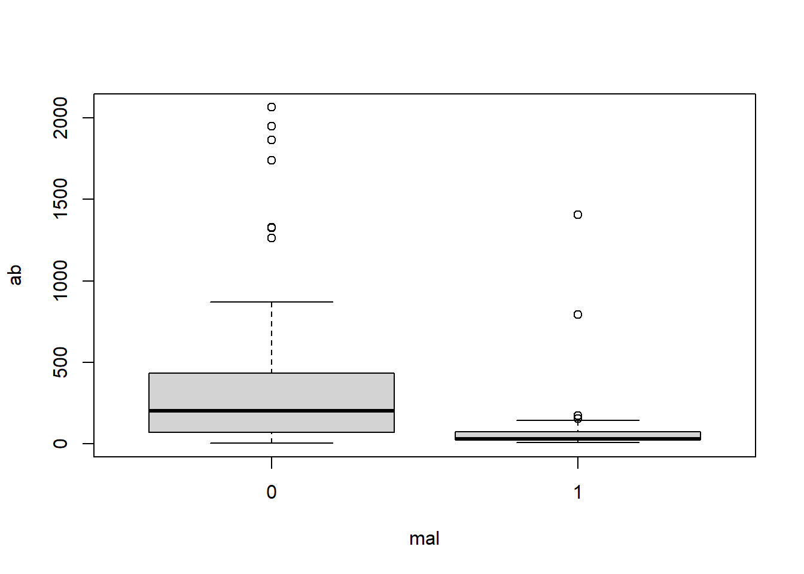

Logistic Regression Models
Logistic regression with no predictors (intercept only)
100 Hershey’s Kisses are put into a large cup and dumped on a table. We want to estimate the proportion of Kisses we can expect to land on their base. (Bilder and Loughin 2015) In our experiment we observe 39 out of 100. What is the 95% confidence interval on the proportion?
We can calculate both the estimated proportion and the 95% confidence
interval using the prop.test() function. We use the
x argument to specify the number of “successes” and the
n argument to specify the number of “trials”. Clearly the
estimated proportion is 39/100 = 0.39. The 95% confidence interval is
reported as [0.296, 0.493]
prop.test(x = 39, n = 100)
1-sample proportions test with continuity correction
data: 39 out of 100, null probability 0.5
X-squared = 4.41, df = 1, p-value = 0.03573
alternative hypothesis: true p is not equal to 0.5
95 percent confidence interval:
0.2955674 0.4929886
sample estimates:
p
0.39 To extract just the confidence interval we can save the result of the
prop.test() function and access the conf.int
element:
pout <- prop.test(x = 39, n = 100)
pout$conf.int[1] 0.2955674 0.4929886
attr(,"conf.level")
[1] 0.95This can also be analyzed as an intercept-only binary logistic
regression model using the glm() function. To carry this
out we create a 1 x 2 matrix using the cbind() function
with successes in the first column and failures in the second column. We
then model the successes and failures as a function of the number one.
This is R’s syntax for fitting an intercept-only model. Notice we also
set family = binomial to tell the glm() that
our response is binary. To extract the confidence interval, we save the
modeling output to an object we name “m” and call confint()
function on it. To get probabilities, we use the plogis()
function, which converts log-odds to probabilities. (Binary logistic
regression models probabilities on the log-odds scale.) The resulting
confidence interval is slightly different than what we calculated above
because confint() uses the profile likelihood method.
m <- glm(cbind(39, 100-39) ~ 1, family = binomial)
plogis(confint(m)) 2.5 % 97.5 %
0.2980745 0.4874909 There are many confidence intervals that can be calculated for proportions. The binom package calculates 11 of them. (Dorai-Raj 2022)
library(binom)
binom.confint(x = 39, n = 100) method x n mean lower upper
1 agresti-coull 39 100 0.3900000 0.3000839 0.4880547
2 asymptotic 39 100 0.3900000 0.2944028 0.4855972
3 bayes 39 100 0.3910891 0.2972462 0.4861311
4 cloglog 39 100 0.3900000 0.2947601 0.4839396
5 exact 39 100 0.3900000 0.2940104 0.4926855
6 logit 39 100 0.3900000 0.2996112 0.4886334
7 probit 39 100 0.3900000 0.2985837 0.4879698
8 profile 39 100 0.3900000 0.2980814 0.4874917
9 lrt 39 100 0.3900000 0.2980690 0.4875128
10 prop.test 39 100 0.3900000 0.2955674 0.4929886
11 wilson 39 100 0.3900000 0.3001687 0.4879698The “prop.test” row shows the first CI we calculated using
prop.test(). The CI in the “profile” row is slightly
different from what we calculated using the confint()
function on the glm model object. The method is the same but the
difference is due to the different default profile settings in the
confint() and binom.confint() functions.
When an estimated proportion is not near 0 or 1 it hardly matters how you estimate the confidence interval. However when your proportion is at the boundary, the confidence intervals can vary dramatically. For example, observe the wide variety of confidence intervals for the estimated proportion of 0.01. The first two methods return estimates with a lower bound below 0.
binom.confint(x = 1, n = 100) method x n mean lower upper
1 agresti-coull 1 100 0.01000000 -0.0036732336 0.05992686
2 asymptotic 1 100 0.01000000 -0.0095013954 0.02950140
3 bayes 1 100 0.01485149 0.0000171265 0.03842621
4 cloglog 1 100 0.01000000 0.0008820719 0.04902922
5 exact 1 100 0.01000000 0.0002531460 0.05445939
6 logit 1 100 0.01000000 0.0014069013 0.06752894
7 probit 1 100 0.01000000 0.0011139167 0.05539560
8 profile 1 100 0.01000000 0.0009043933 0.04328775
9 lrt 1 100 0.01000000 0.0005804259 0.04328644
10 prop.test 1 100 0.01000000 0.0005222226 0.06241198
11 wilson 1 100 0.01000000 0.0017674321 0.05448620Logistic regression with numeric predictors (1)
The malaria data frame from the ISwR package has 100
rows and 4 columns. It contains data on a sample of 100 children aged
3–15 years from a village in Ghana. Based on observations during the
study period, the children were categorized into two groups: individuals
with and without symptoms of malaria. Model the risk of malaria
(mal) as a function of age (age) and
log-transformed antibody levels (log(ab)). (Dalgaard 2020)
library(ISwR)
data("malaria")To start, let’s take a quick look at the summary of the data using
the summary() function:
summary(malaria) subject age ab mal
Min. : 1.00 Min. : 3.00 Min. : 2.0 Min. :0.00
1st Qu.: 25.75 1st Qu.: 5.75 1st Qu.: 29.0 1st Qu.:0.00
Median : 50.50 Median : 9.00 Median : 111.0 Median :0.00
Mean : 50.50 Mean : 8.86 Mean : 311.5 Mean :0.27
3rd Qu.: 75.25 3rd Qu.:12.00 3rd Qu.: 373.8 3rd Qu.:1.00
Max. :100.00 Max. :15.00 Max. :2066.0 Max. :1.00 Looking at the summary, we can see that mal takes the values 0 and 1. The mean of mal is 0.27, which indicates that 27% of the data take the value 1, meaning 27% of children monitored showed symptoms of malaria.
We can see that age ranges from 3 to 15 and is slightly left-skewed. We can tell the skewness by comparing the median to the mean. Here, the median, 9.00, is slightly larger than the mean, 8.86. This indicates that more of the data is below the mean – the distribution is pulled out to the left, meaning there are slightly more younger children in this dataset.
From the summary we can also see that ab is very skewed, but in the opposite direction as age. Ab represents the antibody levels of the subjects and ranges from 2.0 to 2066.0. The median of ab, 111.0, is much smaller than the mean, 311.5. This indicates that ab is right-skewed. If we look at the 3rd quantile, we can see that 75% of the data is below 373.8. The maximum value of 2066.0 is much much larger than the 3rd quantile value, which may hint that the 2066.0 could be an outlier.
Looking at a box plot of the ab can give us a good visualization of this skewness and spread of the data. Here we plot the distribution of ab by mal and log(ab) by mal.
boxplot(ab ~ mal, data = malaria)
boxplot(log(ab) ~ mal, data = malaria)
In the first box plot (ab by mal), because of the spread of the data, it appears very sqiushed and hard to interpret. We can see that children who did show symptoms of malaria (mal = 1) tend to have a lower antibody count while those who did not show symptoms (mal = 0) tend to have a higher antibody count. We can also see the right-skewness of the data.
The log transformed ab data is much clearer. We can see that same trend of lower antibody count for those who showed symptoms of malaria. With this plot we can get a feel for the values of the data: for those who showed no symptoms of malaria, we can see that 50% of the data falls between log(ab) = 4 and 6, whereas 50% of the data for those who did show symptoms of malaria falls between about log(ab) = 3 and 4.
We can also look at how age varies based on malaria symptoms:
library(ggplot2)
malaria$group = ifelse(malaria$mal == 0, 'no symptoms', 'symptoms')
ggplot(malaria, aes(x=age, fill = group)) +
geom_histogram(binwidth=1, color="black",) +
scale_fill_manual(values = c('no symptoms' = 'gray',
'symptoms' = 'cornflowerblue'))From the histogram, we can see that the ages of subjects are more or less uniformly spread from 3 to 15. From the box plot, we can see that subjects who showed symptoms of malaria tended to be of a younger age.
Now let’s build our model. We will use the glm()
function. glm() is used to fit a generalized linear model
to the data. To specify logistic regression, in the argument we set the
family = binomial(link = "logit").
lrm <- glm(mal ~ age + log(ab), family = binomial(link = "logit"), data = malaria)Now we look at a summary of the model:
summary(lrm)
Call:
glm(formula = mal ~ age + log(ab), family = binomial(link = "logit"),
data = malaria)
Deviance Residuals:
Min 1Q Median 3Q Max
-1.8492 -0.7536 -0.4838 0.8809 2.5796
Coefficients:
Estimate Std. Error z value Pr(>|z|)
(Intercept) 2.57234 0.95184 2.702 0.006883 **
age -0.06546 0.06772 -0.967 0.333703
log(ab) -0.68235 0.19552 -3.490 0.000483 ***
---
Signif. codes: 0 '***' 0.001 '**' 0.01 '*' 0.05 '.' 0.1 ' ' 1
(Dispersion parameter for binomial family taken to be 1)
Null deviance: 116.652 on 99 degrees of freedom
Residual deviance: 98.017 on 97 degrees of freedom
AIC: 104.02
Number of Fisher Scoring iterations: 5Next we assess model fit:
anova(lrm, test = "Chisq")Analysis of Deviance Table
Model: binomial, link: logit
Response: mal
Terms added sequentially (first to last)
Df Deviance Resid. Df Resid. Dev Pr(>Chi)
NULL 99 116.652
age 1 3.3718 98 113.280 0.06632 .
log(ab) 1 15.2628 97 98.017 9.354e-05 ***
---
Signif. codes: 0 '***' 0.001 '**' 0.01 '*' 0.05 '.' 0.1 ' ' 1This test helps us to determine if predictors reduce model deviance. The first line of this output shows the null model containing only the intercept – it uses the observed proportion of subjects at risk of malaria. The second line shows a model including age. We can see that this has a slightly better fit than the null model because the deviance reduced from about 116 to about 113. The next row shows the model including both age and log(ab), and we can see that this is an even better fit (\(\chi^2(1,N = 100) = 15.63, p < .001\)) than the model only containing age. Here the deviance dropped down to about 98. In general, a predictor that contributes to a model will reduce deviance by more than 1 or 2 units.
We can also assess fit of the model by comparing it to the saturated model, or a model with perfect fit.
vcdExtra::LRstats(lrm)Likelihood summary table:
AIC BIC LR Chisq Df Pr(>Chisq)
lrm 104.02 111.83 98.017 97 0.452The null hypothesis of this test is that the model is no different from the saturated model. A low p-value rejects the null. Here the p-value is pretty high, so we might have some confidence in using this model to predict the probability of malaria risk.
Before interpreting the model, we can assess model error by looking at a plot of residuals vs. “Hat-values”. Residuals = observed response - predicted probability. Hat-values measure leverage.
car::influencePlot(lrm) StudRes Hat CookD
13 2.674594 0.01824130 0.16944607
19 -1.151539 0.08404905 0.02888989
35 -1.951080 0.07877297 0.14008864
78 2.264687 0.03103829 0.11085074The size of points corresponds to Cook’s Distance. Points to the right of the dotted vertical line have high Hat-Values and could be influencing the fit of the model. Hat-Values measure how far away a subjects predictor values are from the center of the predictor space. Cook’s D measures influence. Big values (ie, big Bubbles) could be influencing the estimated coefficients.
By default the 4 most extreme points are labeled. We can investigate those as follows:
malaria[c(13,19,35, 78),] subject age ab mal group
13 13 14 1407 1 symptoms
19 19 14 14 0 no symptoms
35 35 9 2 0 no symptoms
78 78 5 791 1 symptomsThese points have very high and very low levels of ab. The two highest are unusual because most subjects with mal = 1 have low ab values.
We can also look at the model coefficients and confidence intervals.
lrm$coefficients(Intercept) age log(ab)
2.57233727 -0.06546061 -0.68235363 confint(lrm) 2.5 % 97.5 %
(Intercept) 0.7810426 4.5452306
age -0.2024576 0.0655621
log(ab) -1.0985294 -0.3239378If we look at the confidence intervals for the coefficients in our model, we can see reasonable ranges of values for the coefficients. The reasonable range of values for the age coefficient is -0.202 to 0.066. Note this range is small and includes 0, which implies that the effect of age on mal is small and we can’t be sure if the effect is positive or negative.
The reasonable range of values for log(ab) is -1.099 to -0.324. This range is entirely negative and suggests that lower antibody count is associated with higher risk of malaria. We can exponentiate this confidence interval to get an odds ratio (the ratio of the odds of showing symptoms to the odds of not showing symptoms of malaria).
exp(confint(lrm)["log(ab)",]) 2.5 % 97.5 %
0.3333609 0.7232952 Here we can see that the odds ratio is less than 1, which indicates that as log(ab) increases, the odds of malaria decreases. For every one-unit increase of log(ab), the odds of malaria decreases by anywhere from 28% to 67%. (Note: 1 - 0.33 = 0.67 and 1 - 0.72 = 0.28.)
We can add a column of log transformed antibody values to data frame instead of log transforming on-the-fly and then refit the model. This helps us create an effect plot.
malaria$logab <- log(malaria$ab)
lrm <- glm(mal ~ age + logab, family = binomial(link = "logit"), data = malaria)To create an effect plot for “logab” we can use the ggpredict() function from the ggeffects package. This plot basically shows the predicted probabilities of malaria over the range of observed log antibody levels, holding age at its mean level (in this case, around 9).
library(ggeffects)
plot(ggpredict(model = lrm, terms = "logab [all]"))We see the probability of being at risk of malaria drops pretty dramatically when logab is greater than 3, or transformed back to the original scale, when ab is exp(3) = 54.59, or about 55. The grey strip surronding the line is a 95% confidence ribbon that gives some indication of the uncertainty of our predictions. This ribbon is wider where we have less data and more uncertainty.
Now we can assess the accuracy of the model we built.
anova(lrm, test = "Chisq")Analysis of Deviance Table
Model: binomial, link: logit
Response: mal
Terms added sequentially (first to last)
Df Deviance Resid. Df Resid. Dev Pr(>Chi)
NULL 99 116.652
age 1 3.3718 98 113.280 0.06632 .
logab 1 15.2628 97 98.017 9.354e-05 ***
---
Signif. codes: 0 '***' 0.001 '**' 0.01 '*' 0.05 '.' 0.1 ' ' 1If we wanted to, we could have split the data into training and testing data:
set.seed(1) # make reproducible
i <- sample(x = nrow(malaria), size = 0.75*floor(nrow(malaria)))
malaria.train <- malaria[i,]
malaria.test <- malaria[-i,]We can then test our model on the training data and see how well it performs.
prediction <- predict(lrm, newdata = malaria.test, type="response")Logistic regression with numeric predictors (2)
The pima data frame from the faraway package contains
data on 768 adult female Pima Indians living near Phoenix (Faraway 2016). This data was collected by The National Institute of Diabetes and
Digestive and Kidney Diseases. The purpose of the study was to
investigate factors related to diabetes. The variable “test” indicates
whether the patient showed signs of diabetes (coded 0 if negative, 1 if
positive). Model test as a function of all other predictors.
library(faraway)
data("pima")We can get quick statistical summaries of all the variables using the
summary() function.
summary(pima) pregnant glucose diastolic triceps
Min. : 0.000 Min. : 0.0 Min. : 0.00 Min. : 0.00
1st Qu.: 1.000 1st Qu.: 99.0 1st Qu.: 62.00 1st Qu.: 0.00
Median : 3.000 Median :117.0 Median : 72.00 Median :23.00
Mean : 3.845 Mean :120.9 Mean : 69.11 Mean :20.54
3rd Qu.: 6.000 3rd Qu.:140.2 3rd Qu.: 80.00 3rd Qu.:32.00
Max. :17.000 Max. :199.0 Max. :122.00 Max. :99.00
insulin bmi diabetes age
Min. : 0.0 Min. : 0.00 Min. :0.0780 Min. :21.00
1st Qu.: 0.0 1st Qu.:27.30 1st Qu.:0.2437 1st Qu.:24.00
Median : 30.5 Median :32.00 Median :0.3725 Median :29.00
Mean : 79.8 Mean :31.99 Mean :0.4719 Mean :33.24
3rd Qu.:127.2 3rd Qu.:36.60 3rd Qu.:0.6262 3rd Qu.:41.00
Max. :846.0 Max. :67.10 Max. :2.4200 Max. :81.00
test
Min. :0.000
1st Qu.:0.000
Median :0.000
Mean :0.349
3rd Qu.:1.000
Max. :1.000 The variables are as follows:
- pregnant: number of times a subject was pregnant
- glucose: plasma glucose concentration
- diastolic: diastolic blood pressure
- triceps: triceps skin fold thickness
- insulin: 2-hour serum insulin in units of \(\mu U/ml\)
- bmi: body mass index
- diabetes: diabetes pedigree function
- age: subject’s age
- test: whether patient showed signs of diabetes (0 if negative, 1 if positive)
Looking at test, we can see that it ranges from 0 to 1. The mean of test is 0.349 which indicates that 34.9% of the data entries in test take the value of 1. In the context of this data set, this means that 34.9% of people in this study showed signs of diabetes.
From the summary we can see that insulin is right-skewed. Insulin ranges from 0 to 846.0, and its median of 30.5 is much less than its mean of 79.8. The 3rd quartile of insulin is 127.2, meaning that 75% of the data is below 127.2. The maximum value of 846.0 may be an outlier.
Like our previous example, we can look at a box plot to see this skewness.
boxplot(insulin ~ test, data = pima)Now let’s build our logistic regression model using the
glm() function. Setting
family = binomial(link = "logit") in the argument specifies
logistic regression. We can call summary() on our model to
get a model summary.
pima_model = glm(test ~ ., family = binomial(link = "logit"), data = pima)
summary(pima_model)
Call:
glm(formula = test ~ ., family = binomial(link = "logit"), data = pima)
Deviance Residuals:
Min 1Q Median 3Q Max
-2.5566 -0.7274 -0.4159 0.7267 2.9297
Coefficients:
Estimate Std. Error z value Pr(>|z|)
(Intercept) -8.4046964 0.7166359 -11.728 < 2e-16 ***
pregnant 0.1231823 0.0320776 3.840 0.000123 ***
glucose 0.0351637 0.0037087 9.481 < 2e-16 ***
diastolic -0.0132955 0.0052336 -2.540 0.011072 *
triceps 0.0006190 0.0068994 0.090 0.928515
insulin -0.0011917 0.0009012 -1.322 0.186065
bmi 0.0897010 0.0150876 5.945 2.76e-09 ***
diabetes 0.9451797 0.2991475 3.160 0.001580 **
age 0.0148690 0.0093348 1.593 0.111192
---
Signif. codes: 0 '***' 0.001 '**' 0.01 '*' 0.05 '.' 0.1 ' ' 1
(Dispersion parameter for binomial family taken to be 1)
Null deviance: 993.48 on 767 degrees of freedom
Residual deviance: 723.45 on 759 degrees of freedom
AIC: 741.45
Number of Fisher Scoring iterations: 5We can then assess the model fit using the anova()
function and specify a Chi-Squared test in the argument.
anova(pima_model, test = "Chisq")Analysis of Deviance Table
Model: binomial, link: logit
Response: test
Terms added sequentially (first to last)
Df Deviance Resid. Df Resid. Dev Pr(>Chi)
NULL 767 993.48
pregnant 1 37.274 766 956.21 1.026e-09 ***
glucose 1 171.260 765 784.95 < 2.2e-16 ***
diastolic 1 0.888 764 784.06 0.3460418
triceps 1 3.999 763 780.06 0.0455212 *
insulin 1 1.972 762 778.09 0.1602210
bmi 1 41.243 761 736.85 1.344e-10 ***
diabetes 1 10.880 760 725.97 0.0009719 ***
age 1 2.522 759 723.45 0.1122535
---
Signif. codes: 0 '***' 0.001 '**' 0.01 '*' 0.05 '.' 0.1 ' ' 1To reiterate, this test helps us determine if a particular predictor helps to reduce the model deviance. The first line shows the null model containing only the intercept – it uses just the observed proportion of subjects with a positive diabetes test result. The second line shows the model including pregnant. We can see this second model reduced the residual deviance from 993.48 to 956.21. This indicates to us that pregnant is an important contributor to the model because it reduced the deviance by more than 1 or 2 units. We can see that including glucose gives a better fit (\(\chi^2 = 171.260, p < .001\)), and the deviance is reduced to 784.95.
Like we did in the above example, we can evaluate the model fit by comparing it to a saturated model.
vcdExtra::LRstats(pima_model)Likelihood summary table:
AIC BIC LR Chisq Df Pr(>Chisq)
pima_model 741.45 783.24 723.45 759 0.8186Here, we see that the p-value is fairly large. This indicates that this model is likely good at predicting if a subject has diabetes given the predictors.
We can also assess the model error by looking at a plot of residuals vs. “Hat-values”.
car::influencePlot(pima_model) StudRes Hat CookD
14 1.002281 0.114022424 0.009536169
229 -2.634163 0.020610966 0.057205591
350 2.967294 0.003069042 0.024729204
454 -1.057796 0.078351507 0.007159288
503 2.786460 0.005137660 0.024505179
707 2.306667 0.023944183 0.031920741Here we can see the 6 most extreme values labelled. We can take a look at them like this:
pima[c(14, 229, 350, 454, 503, 707),] pregnant glucose diastolic triceps insulin bmi diabetes age test
14 1 189 60 23 846 30.1 0.398 59 1
229 4 197 70 39 744 36.7 2.329 31 0
350 5 0 80 32 0 41.0 0.346 37 1
454 2 119 0 0 0 19.6 0.832 72 0
503 6 0 68 41 0 39.0 0.727 41 1
707 10 115 0 0 0 0.0 0.261 30 1We can see here that these 6 subjects all have either very high or very low values for the insulin predictor, 0, 744, and 846, and very high/low values for glucose as well.
Further we can evaluate the model coefficients and confidence intervals:
pima_model$coefficients (Intercept) pregnant glucose diastolic triceps
-8.4046963669 0.1231822984 0.0351637146 -0.0132955469 0.0006189644
insulin bmi diabetes age
-0.0011916990 0.0897009700 0.9451797406 0.0148690047 confint(pima_model) 2.5 % 97.5 %
(Intercept) -9.860319374 -7.0481062619
pregnant 0.060918463 0.1868558244
glucose 0.028092756 0.0426500736
diastolic -0.023682464 -0.0031039754
triceps -0.012849460 0.0142115759
insulin -0.002966884 0.0005821426
bmi 0.060849478 0.1200608498
diabetes 0.365370025 1.5386561742
age -0.003503266 0.0331865712The confidence intervals give us an idea of what we can expect as a reasonable range of values for each predictor. For example we can see that the reasonable range of values for diabetes is from about 0.365 to about 1.539. This range is somewhat large and entirely positive, which indicates to us that diabetes has a positive effect on test.
The interval for insulin, on the other hand, includes negative and positive values which means we can’t tell if the effect is negative or positive. The range is small so we know the effect of insulin is small compared to diabetes.
To get odds ratios of showing signs of diabetes to the odds of not showing signs of diabetes by exponentiating the confidence intervals. For example,
exp(confint(pima_model)["glucose",]) 2.5 % 97.5 %
1.028491 1.043573 The odds ratios here are larger than one, which indicates that as the glucose predictor increases, the odds of having a positive diabetes result (test = 1) increases. For every unit increase in glucose, the odds of having diabetes increases anywhere from 2.85% to 4.37%.
We can create an effect plot for glucose using
ggpredict() from the ggeffects package:
library(ggeffects)
plot(ggpredict(model = pima_model, terms = "glucose [all]"))
This plot shows the predicted probabilities of having diabetes (test) over the range of observed glucose values. It holds the remaining predictors at their mean values.
We can see that the probability of having diabetes (test = 1) increases more quickly when the glucose levels is around 75 and above. The grey ribbon surrounding the solid black line is the 95% confidence ribbon and gives us an idea about the uncertainty of the model predictions – a wider ribbon indicates more uncertainty. We can see that we have more uncertainty with larger glucose values.
Logistic regression with numeric and categorical predictors
The text Applied Logistic Regression (3rd Ed) (Hosmer and Lemeshow 2013) presents data on women who were tracked as part of the Global Longitudinal Study of Osteoporosis in Women (GLOW). The GLOW data has information on 500 women, 125 of whom had a fracture during the first year of follow-up. One goal of this study was to evaluate risk factors for fractures.
The data is available as a “.txt” file. Below we import the data
using the read.table() function with
header=TRUE since the first row contains column header
names. We then select columns we want to analyze and convert all the
variable names to lower case for convenience.
URL <- "https://raw.githubusercontent.com/uvastatlab/sme/main/data/GLOW500.txt"
glow <- read.table(URL, header = TRUE)
glow <- glow[,c("PRIORFRAC", "AGE", "WEIGHT", "PREMENO", "RATERISK", "FRACTURE")]
names(glow) <- tolower(names(glow))The variables are as follows:
- priorfrac: history of prior fracture (1 = yes, 0 = no)
- age: age at enrollment
- weight: weight at enrollment in kilograms
- premeno: menopause before age 45 (1 = yes, 0 = no)
- raterisk: self-reported risk of fracture (1 = Less than others of the same age, 2 = Same as others of the same age, 3 = Greater than others of the same age)
- fracture: any fracture in first year (1 = yes, 0 = no)
Since raterisk, priorfrac, and premeno are categorical variables, let’s format as these as factors with descriptive labels.
glow$raterisk <- factor(glow$raterisk, labels = c("less", "same", "greater"))
glow$priorfrac <- factor(glow$priorfrac, labels = c("no", "yes"))
glow$premeno <- factor(glow$premeno, labels = c("no", "yes"))We can now model fracture as a function of the other variables.
(Hosmer and Lemeshow 2013, Chapter 2). We use the syntax
fracture ~ . where the . indicates to the
glm function that we are predicting fracture
using all other variables in the glow dataframe.
m <- glm(fracture ~ ., data = glow, family = binomial)Similar to above, we can assess the fit of this model using the
LRstats() function.
vcdExtra::LRstats(m)Likelihood summary table:
AIC BIC LR Chisq Df Pr(>Chisq)
m 532.08 561.58 518.08 493 0.21The null hypothesis of this test is that the model is no different from the saturated model. A small p-value provides evidence against the null. Here the p-value is pretty high, so we might have some confidence in using this model to estimate the probability of a fracture based on the indepedent variables.
To help understand the model, let’s create effect displays. One way
to get started is with the effects package (Fox and Weisberg 2018). Simply use the
allEffects() function in combination with
plot():
library(effects)
plot(allEffects(m))This has produced 5 plots, one for each independent variable in the model. On the y-axis is the probability of fracture and on the x-axis is the value for each independent variable. The error bars and light blue ribbons indicate the 95% confidence intervals. It appears history of prior fracture, age, and self-reported risk are all positively associated with the probability of sustaining a fracture. The effects of weight and menopause before age 45 are less certain.
We can see the probability estimates by looking at the object
produced by allEffects(). For example, the estimated
probability of a fracture for someone who had a prior fracture is about
0.33, assuming all other variables are held constant at their mean
level. This is about 0.13 higher than the estimated probability for a
fracture for those subjects who had no prior fracture.
allEffects(m) model: fracture ~ priorfrac + age + weight + premeno + raterisk
priorfrac effect
priorfrac
no yes
0.2005593 0.3310710
age effect
age
55 64 72 81 90
0.1310614 0.1914947 0.2613063 0.3571143 0.4658951
weight effect
weight
40 62 83 110 130
0.2072760 0.2224130 0.2375832 0.2581110 0.2740429
premeno effect
premeno
no yes
0.2230727 0.2571392
raterisk effect
raterisk
less same greater
0.1587708 0.2436246 0.3114648 How certain are we about the estimated difference of 0.13 between
those with and without prior fractures? We can use the emmeans package
(Lenth 2022) to help investigate. Below we
use the emmeans() function to compare the two estimated
probabilities. The difference appears to be different from 0 which we
infer from the large z ratio and small p-value. The
regrid = "response" argument ensures the output is on the
probability scale. The revpairwise keywords says to
“reverse” the pairwise comparison and subtract “no” from “yes”.
library(emmeans)
emmeans(m, specs = revpairwise ~ priorfrac, regrid = "response")$emmeans
priorfrac prob SE df asymp.LCL asymp.UCL
no 0.219 0.0269 Inf 0.166 0.271
yes 0.352 0.0473 Inf 0.259 0.444
Results are averaged over the levels of: premeno, raterisk
Confidence level used: 0.95
$contrasts
contrast estimate SE df z.ratio p.value
yes - no 0.133 0.0503 Inf 2.647 0.0081
Results are averaged over the levels of: premeno, raterisk We can pipe the function’s output into confint() to get
a 95% confidence interval on the difference in probabilities. It appears
the data is consistent with a difference ranging from 0.0345 to
0.232.
emmeans(m, specs = revpairwise ~ priorfrac, regrid = "response") |>
confint()$emmeans
priorfrac prob SE df asymp.LCL asymp.UCL
no 0.219 0.0269 Inf 0.166 0.271
yes 0.352 0.0473 Inf 0.259 0.444
Results are averaged over the levels of: premeno, raterisk
Confidence level used: 0.95
$contrasts
contrast estimate SE df asymp.LCL asymp.UCL
yes - no 0.133 0.0503 Inf 0.0345 0.232
Results are averaged over the levels of: premeno, raterisk
Confidence level used: 0.95 It’s important to note the above comparison is based on holding all
other predictor variables at some fixed level, typically their mean
value. We can use the at argument to specify at what levels
to hold the other variables. For example, what’s the difference in
expected probability of fracture between those with and without prior
fractures assuming the subject is age 60, weighs 70 kg, did not
experience menopause before age 45, and has “same” self-reported
risk?
emmeans(m, specs = revpairwise ~ priorfrac,
regrid = "response",
at = list(age = 60, weight = 70,
premeno = "no", raterisk = "same")) |>
confint()$emmeans
priorfrac prob SE df asymp.LCL asymp.UCL
no 0.145 0.0298 Inf 0.0862 0.203
yes 0.250 0.0604 Inf 0.1318 0.369
Confidence level used: 0.95
$contrasts
contrast estimate SE df asymp.LCL asymp.UCL
yes - no 0.106 0.0463 Inf 0.0147 0.196
Confidence level used: 0.95 We estimate the difference in probability to be about 0.11 with a 95% confidence interval of [0.0147, 0.196].
Since we did not incorporate non-linear effects or interactions, we can directly interpret the coefficients in the logistic regression model output. Below we extract just the coefficient table from the summary output and round to three decimal places.
coef(summary(m)) |> round(3) Estimate Std. Error z value Pr(>|z|)
(Intercept) -5.606 1.221 -4.592 0.000
priorfracyes 0.679 0.242 2.803 0.005
age 0.050 0.013 3.737 0.000
weight 0.004 0.007 0.589 0.556
premenoyes 0.187 0.277 0.676 0.499
raterisksame 0.534 0.276 1.938 0.053
rateriskgreater 0.874 0.289 3.023 0.003The coefficient for “priorfracyes” is the expected log-odds change in fracture when priorfrac = “yes”. If we exponentiate this value we get an odds ratio. Below we exponentiate all coefficients and round to 3 decimal places.
coef(m) |> exp() |> round(3) (Intercept) priorfracyes age weight premenoyes
0.004 1.973 1.051 1.004 1.206
raterisksame rateriskgreater
1.707 2.397 Assuming all other variables held constant, the odds of a fracture if you had a prior fracture is about 1.97 times higher than if you did not have a prior fracture. Likewise the odds of a fracture increase by a factor of about 1.05 for each year subjects get older, assuming all else held constant.
95% confidence intervals help us understand the uncertainty in the
estimated odds ratios. We can get these using confint() on
the model object.
confint(m) |>
exp() |>
round(3) 2.5 % 97.5 %
(Intercept) 0.000 0.039
priorfracyes 1.223 3.167
age 1.024 1.080
weight 0.990 1.018
premenoyes 0.692 2.056
raterisksame 1.000 2.957
rateriskgreater 1.368 4.263It appears the odds ratio for priorfrac is plausibly between 1.223 and 3.167.
Ordered logistic regression
The Vietnam data frame in the vcdExtra package (Friendly 2022) contains survey data from 1967
on student opinions of the Vietnam War. Students were asked to indicate
which policy out of A, B, C or D they supported. The response categories
were:
- A: Defeat North Vietnam by widespread bombing and land invasion
- B: Maintain the present policy
- C: De-escalate military activity, stop bombing and begin negotiations
- D: Withdraw military forces immediately
These are ordered levels, moving from very pro-war (A) to anti-war
(D). Fit a proportional odds model to the data, modeling
response as a function of sex,
year, and their interaction. (Friendly and Meyer 2016) This will require
using the weights argument with the polr()
function. (Venables and Ripley 2002)
We load the vcdExtra package and then load the Vietnam data using the
data() function. The head() function returns
the first 6 rows of the data frame and shows the data structured as
one row per variable combination. For example, the first row
shows 13 Freshman Females selected response A.
library(vcdExtra)
data("Vietnam")
head(Vietnam) sex year response Freq
1 Female 1 A 13
2 Female 1 B 19
3 Female 1 C 40
4 Female 1 D 5
5 Female 2 A 5
6 Female 2 B 9Let’s label the response variable for ease of interpretation. We can
do this with the factor() function. In addition we set
ordered = TRUE to tell R this is an ordered categorical
variable.
Vietnam$response <- factor(Vietnam$response,
labels = c("Defeat", "Maintain",
"De-escalate", "Withdraw"),
ordered = TRUE)The year variable is an integer ranging from 1 - 5, corresponding to Freshmen, Sophomore, Junior, Senior, and Grad student. Let’s format that as a factor as well.
Vietnam$year <- factor(Vietnam$year, labels = c("Freshman", "Sophomore",
"Junior", "Senior",
"Grad student"))The Freq column counts the number of responses for each combination
of sex, year and response. We can use the xtabs() function
to create tables to help us summarize and understand the data. One table
of interest is simply a breakdown of responses across all years and both
sexes. The syntax Freq ~ response says “sum Freq by
response levels”. We see most students preferred to De-escalate.
xtabs(Freq ~ response, data = Vietnam)response
Defeat Maintain De-escalate Withdraw
801 738 1319 289 We can pipe the table into proportions() to see a
breakdown of proportions. The proportion preferring De-escalation is
0.42, or 42 percent.
xtabs(Freq ~ response, data = Vietnam) |>
proportions() |>
round(2)response
Defeat Maintain De-escalate Withdraw
0.25 0.23 0.42 0.09 Counts of sexes and years can be obtained this way as well. Over 80% of respondents were Male.
xtabs(Freq ~ sex, data = Vietnam) |>
proportions() |>
round(2)sex
Female Male
0.18 0.82 A majority of respondents were Grad students.
xtabs(Freq ~ year, data = Vietnam) |>
proportions() |>
round(2)year
Freshman Sophomore Junior Senior Grad student
0.16 0.16 0.19 0.18 0.31 How do proportions of war response compare by sex? We can add the sex
variable to the xtabs() syntax to get this information.
Notice when we pipe into proportions() we enter
margin = 1 to specify we want proportions calculated along
the first dimension, which is the rows. This shows that both sexes
prefer to De-escalate, but that females prefer to De-escalate by a much
wider margin.
xtabs(Freq ~ sex + response, data = Vietnam) |>
proportions(margin = 1) |>
round(2) response
sex Defeat Maintain De-escalate Withdraw
Female 0.12 0.18 0.63 0.06
Male 0.28 0.25 0.37 0.10Does preference depend on year of the student? Again we can modify
the xtabs() syntax as we did before. This time we see a
slight preference for Defeat in the Freshman group and a large
proportion preferring Withdraw in the Grad student group.
xtabs(Freq ~ year + response, data = Vietnam) |>
proportions(margin = 1) |>
round(2) response
year Defeat Maintain De-escalate Withdraw
Freshman 0.36 0.26 0.33 0.04
Sophomore 0.34 0.27 0.34 0.05
Junior 0.26 0.25 0.44 0.06
Senior 0.28 0.20 0.43 0.09
Grad student 0.14 0.21 0.49 0.16We might want to look at response by year and sex. Below we only look
at the Freshman group using the subset argument. We see
Males prefer “Defeat” while Females prefer “De-escalate”.
xtabs(Freq ~ sex + response, data = Vietnam,
subset = year == "Freshman") |>
proportions(margin = 1) |>
round(2) response
sex Defeat Maintain De-escalate Withdraw
Female 0.17 0.25 0.52 0.06
Male 0.40 0.26 0.30 0.04We can create a data frame for visualizing the response proportions
for all years by removing the subset argument from
xtabs() and setting margin = c(1,3) in the
call to proportions(). This calculates proportions along
the rows (1st dimension) within each year (3rd dimension). Piping into
as.data.frame(responseName = "Prop") returns a data frame
with a column called “Prop” containing the proportions for each
male/female response within each year group.
v_df <- xtabs(Freq ~ sex + response + year, data = Vietnam) |>
proportions(margin = c(1,3)) |>
as.data.frame(responseName = "Prop")We can now visualize the data using the ggplot2 package (Wickham 2016). Since the proportions have
already been calculated we use the geom_col() function to
create the bar charts. We see that Males preferred Defeat over all year
groups while Females preferred De-escalate over all year groups. We also
notice that as we move higher along the class groups, we see increasing
support among Males for De-escalate and Withdraw policies.
library(ggplot2)
ggplot(v_df) +
aes(x = year, y = Prop, fill = sex) +
geom_col(position = "dodge") +
facet_wrap(~ response)We now proceed to model the ordered categorical response as a
function of sex, year and their interaction. We use the
polr() function (Venables and Ripley
2002) to fit a proportional odds logistic regression
model. This models the cumulative probabilities of the
ordered response. We call the model proportional because we
assume the predictor effects are the same, no matter what cumulative
probability we consider. For example, we assume the effect of sex
is the same whether we consider \(P(\text{response} <= \text{Maintain})\)
or \(P(\text{response} <=
\text{De-escalate})\).
Before we begin, let’s look at the observed cumulative
proportions of response by year and sex. We do this by applying the
cumsum() function along the rows for each year using
apply(MARGIN = c(1,3), cumsum). Notice we need to use the
aperm() function (Array Transposition) to rotate the
results. The vector c(2, 1, 3) says to put the columns (2)
on the rows, the rows (1) on the columns, and leave the strata (3) as
is. We see, for example, that 0.42 of Freshman Females prefer “Maintain”
or “Defeat”, while 0.66 of Freshman Males prefer “Maintain” or “Defeat”.
The final columns are all 1s because all students prefer “Withdraw” or a
lower response. It is these cumulative proportions that we will
model.
xtabs(Freq ~ sex + response + year, data = Vietnam) |>
proportions(margin = c(1, 3)) |>
apply(MARGIN = c(1, 3), cumsum) |>
round(2) |>
aperm(c(2, 1, 3)), , year = Freshman
response
sex Defeat Maintain De-escalate Withdraw
Female 0.17 0.42 0.94 1
Male 0.40 0.66 0.96 1
, , year = Sophomore
response
sex Defeat Maintain De-escalate Withdraw
Female 0.10 0.28 0.94 1
Male 0.36 0.65 0.95 1
, , year = Junior
response
sex Defeat Maintain De-escalate Withdraw
Female 0.13 0.31 0.96 1
Male 0.30 0.58 0.93 1
, , year = Senior
response
sex Defeat Maintain De-escalate Withdraw
Female 0.12 0.33 0.90 1
Male 0.31 0.51 0.91 1
, , year = Grad student
response
sex Defeat Maintain De-escalate Withdraw
Female 0.10 0.25 0.93 1
Male 0.15 0.38 0.82 1In the polr() code below we specify
weights = Freq since our data is structured as one row per
sex/year combination instead of one row per response, and we set
Hess = TRUE to compute standard errors.
library(MASS)
m <- polr(response ~ sex * year, data = Vietnam,
weights = Freq, Hess = TRUE)
summary(m)Call:
polr(formula = response ~ sex * year, data = Vietnam, weights = Freq,
Hess = TRUE)
Coefficients:
Value Std. Error t value
sexMale -0.9778 0.2238 -4.3699
yearSophomore 0.3859 0.3264 1.1821
yearJunior 0.2422 0.2477 0.9774
yearSenior 0.3399 0.2744 1.2384
yearGrad student 0.4832 0.2444 1.9770
sexMale:yearSophomore -0.2659 0.3488 -0.7622
sexMale:yearJunior 0.1568 0.2769 0.5664
sexMale:yearSenior 0.2400 0.3009 0.7976
sexMale:yearGrad student 0.8577 0.2685 3.1946
Intercepts:
Value Std. Error t value
Defeat|Maintain -1.3930 0.2077 -6.7069
Maintain|De-escalate -0.2897 0.2059 -1.4068
De-escalate|Withdraw 2.1677 0.2121 10.2215
Residual Deviance: 7736.07
AIC: 7760.07 In the output we get one set of coefficients for the predictors but three intercepts reflecting the three possible cumulative probabilities:
- \(P(\text{response} <= \text{Defeat})\)
- \(P(\text{response} <= \text{Maintain})\)
- \(P(\text{response} <= \text{De-escalate})\)
By definition, the \(P(\text{response} <= \text{Withdraw}) = 1\), so it is not modeled.
We can interpret the coefficients as odds ratios by exponentiating them. An odds ratio is the odds of one event divided by the odds of another event. Odds are defined as \(p/(1-p)\), where p is the probability of an event. For example, if the probability a Freshman Male prefers Defeat is 0.40, and the probability a Freshman Female prefers Defeat is 0.20, then the odds ratio is calculated as follows:
\[\frac{0.40/(1 - 0.40)}{0.20/(1 - 0.20)} = \frac{0.67}{0.25} = 2.67 \]
This says the odds that a Freshman Male prefers Defeat is about 2.67 times the the odds that a Freshman Female prefers Defeat.
The model output shows coefficients for Males and all years except Freshman. This implies the reference levels are Female and Freshman. Therefore exponentiating the coefficients will produce an odds ratio in comparison to Freshman Females. But since we have interactions, the main effect coefficients only apply to certain groups. For example:
- the Male coefficient of -0.9778 applies to Freshman Males.
- The Sophomore coefficient of 0.3859 applies to Sophomore Females.
- The effect of Sophomore Males is the sum of the Male coefficient, the Sophomore coefficient, and their interaction: -0.9778 + 0.3859 + -0.2659 = -0.8578.
Exponentiating the Male coefficient returns an odds ratio of 0.376. This says the odds of Freshman Males preferring a certain response or lower is 1 - 0.376 = 0.624, or about 62% lower than the odds of Freshman Females preferring a certain response or lower.
exp(coef(m)["sexMale"]) sexMale
0.3761472 Remember, we’re modeling cumulative probabilities, hence the expression, “some response or lower”. Also the coefficients apply to all responses. It doesn’t matter whether we’re considering “Maintain or lower” or “De-escalate or lower.”
Likewise, exponentiating the sum of coefficients for Sophomore Males, -0.8578, returns an odds ratio of 0.424. This says the odds of Sophomore Males preferring a certain response or lower is 1 - 0.424 = 0.576, or about 58% lower than the odds of Freshman Females preferring a certain response or lower.
vars <- c("sexMale", "yearSophomore", "sexMale:yearSophomore")
exp(sum(coef(m)[vars]))[1] 0.4241029We can also use the model to get estimated cumulative probabilities instead of odds ratios. For example, what is the estimated cumulative probability that Grad Student Females prefer De-escalate or lower? Using our model coefficients, we can write this out as follows:
\[P(\text{response} <=
\text{De-escalate}) = 2.1677 - 0.4832\] We subtract instead of
add coefficients because that’s how proportional odds models are
defined. (see ?polr) We use the
De-escalate|Withdraw intercept because we’re interested in
the cumulative probability of De-escalate or lower. The result, 1.6845
is on the log odds scale. If we take the inverse logit using the
plogis() function we get the result as a cumulative
probability. (Note: we can use the zeta component of the
model object to extract the intercepts.) The estimated cumulative
probability is about 0.84. We estimate a high probability of a Grad
student Female of preferring De-escalate or lower.
plogis(m$zeta["De-escalate|Withdraw"] - coef(m)["yearGrad student"])De-escalate|Withdraw
0.8434966 To estimate the probability of preferring just the De-escalate response, we need to subtract the cumulative probability of preferring Maintain or lower. The result is about 0.53.
plogis(m$zeta["De-escalate|Withdraw"] - coef(m)["yearGrad student"]) -
plogis(m$zeta["Maintain|De-escalate"] - coef(m)["yearGrad student"])De-escalate|Withdraw
0.5276468 We can get the specific probabilities directly by using the
predict() function with type = "probs".
predict(m, newdata = data.frame(sex = "Female", year = "Grad student"),
type = "probs" ) Defeat Maintain De-escalate Withdraw
0.1328289 0.1830209 0.5276468 0.1565034 If we pipe the result into cumsum() we get the estimated
probability for De-escalate that we calculated “by hand” above.
predict(m, newdata = data.frame(sex = "Female", year = "Grad student"),
type = "probs" ) |>
cumsum() Defeat Maintain De-escalate Withdraw
0.1328289 0.3158498 0.8434966 1.0000000 Recall the assumption of proportional odds. Is this assumption
plausible? There a few ways we can assess this. One is to carry out a
test for proportional odds (Brant 1990)
using the poTest() function in the car package (Fox and Weisberg 2019). For this to work we
need to refit our model using data structured with one row per
response. To convert our data frame to this structure, we can use
the uncount() function from the tidyr package (Wickham and Girlich 2022). We then refit our
model using polr() but this time without the weights
argument. Notice the model estimated coefficients are identical to the
first model.
library(tidyr)
Vietnam2 <- uncount(Vietnam, weights = Freq)
m2 <- polr(response ~ sex * year, data = Vietnam2, Hess = TRUE)
all.equal(coef(m2), coef(m))[1] TRUENow we carry out the proportional odds test. A low p-value is evidence against the null hypothesis that the proportional odds assumption is satisfied. Several tests are computed:
- an overall test of the proportional odds assumption (in the first row)
- separate tests for each coefficient (all remaining rows)
The first column contains the coefficients for the polr
model. The second, third, and fourth rows contain coefficients for a
series of binary logistic regression models. For example, the second
column shows the coefficients for modeling the binary response of Not
Defeat vs Defeat.1 The general idea is that the coefficients
should be roughly the same across the three binary logistic regressions
and similar to the polr coefficient.
The Overall test is rejected but the tests for each predictor appear fine. This seems contradictory. However, Brant (1990) notes that “even if the [overall] test is sufficiently powerful to detect departures from proportionality, inspection of the individual components of the test statistic…may provide no clear indication as to the nature of the discrepancy detected.” (page 1173)
library(car)
poTest(m2)
Tests for Proportional Odds
polr(formula = response ~ sex * year, data = Vietnam2, Hess = TRUE)
b[polr] b[>Defeat] b[>Maintain] b[>De-escalate]
Overall
sexMale -0.9778 -1.1828 -1.0170 -0.5446
yearSophomore 0.3859 0.6033 0.6035 -0.0843
yearJunior 0.2422 0.2918 0.4808 -0.6224
yearSenior 0.3399 0.4098 0.3821 0.4590
yearGrad student 0.4832 0.5856 0.7792 0.0731
sexMale:yearSophomore -0.2659 -0.4477 -0.5336 0.2980
sexMale:yearJunior 0.1568 0.1280 -0.1247 1.1952
sexMale:yearSenior 0.2400 -0.0169 0.2471 0.4849
sexMale:yearGrad student 0.8577 0.7278 0.3995 1.6275
Chisquare df Pr(>Chisq)
Overall 72.82 18 1.5e-08 ***
sexMale 1.23 2 0.54
yearSophomore 0.77 2 0.68
yearJunior 3.25 2 0.20
yearSenior 0.02 2 0.99
yearGrad student 1.83 2 0.40
sexMale:yearSophomore 0.98 2 0.61
sexMale:yearJunior 3.88 2 0.14
sexMale:yearSenior 0.62 2 0.73
sexMale:yearGrad student 4.58 2 0.10
---
Signif. codes: 0 '***' 0.001 '**' 0.01 '*' 0.05 '.' 0.1 ' ' 1Another approach to inspecting the proportional odds assumption is to look at the differences of logits of the cumulative probabilities using the relative frequencies, as described in Venables and Ripley (2002, page 204). To begin we calculate the observed cumulative proportions for each of the 10 possible variable combinations. The result below shows cumulative proportions for the 10 combinations in the columns.
vietnam.cpr <- xtabs(Freq ~ sex + year + response, data = Vietnam) |>
ftable(col.vars = "response") |>
proportions(margin = 1) |>
apply(MARGIN = 1, cumsum)
vietnam.cpr sex_year
response Female_Freshman Female_Sophomore Female_Junior Female_Senior
Defeat 0.1688312 0.10 0.1317365 0.1188119
Maintain 0.4155844 0.28 0.3053892 0.3267327
De-escalate 0.9350649 0.94 0.9640719 0.9009901
Withdraw 1.0000000 1.00 1.0000000 1.0000000
sex_year
response Female_Grad student Male_Freshman Male_Sophomore Male_Junior
Defeat 0.1016043 0.3986333 0.3619910 0.3034483
Maintain 0.2459893 0.6628702 0.6470588 0.5793103
De-escalate 0.9304813 0.9612756 0.9524887 0.9333333
Withdraw 1.0000000 1.0000000 1.0000000 1.0000000
sex_year
response Male_Senior Male_Grad student
Defeat 0.3091684 0.1512821
Maintain 0.5117271 0.3769231
De-escalate 0.9061834 0.8192308
Withdraw 1.0000000 1.0000000Next we use the qlogis() function to convert to logits
(ie, log odds) and then take the difference in logits between row 2
(Maintain) and row 1 (Defeat). We would like these differences to be
about the same. The mean difference is about 1.14 and there doesn’t seem
to be too much deviance from it, with minimum of 0.85 and maximum of
1.28.
vietnam.ld <- qlogis(vietnam.cpr[2,]) - qlogis(vietnam.cpr[1,])
sort(vietnam.ld) Male_Senior Female_Grad student Female_Junior Male_Freshman
0.8509267 1.0594065 1.0639267 1.0872741
Male_Junior Male_Sophomore Male_Grad student Female_Sophomore
1.1508738 1.1728691 1.2219521 1.2527630
Female_Freshman Female_Senior
1.2530071 1.2807296 summary(vietnam.ld) Min. 1st Qu. Median Mean 3rd Qu. Max.
0.8509 1.0698 1.1619 1.1394 1.2451 1.2807 We can also take the difference in logits between row 3 (De-Escalate) and row 2 (Maintain). The mean is about 2.9 with a bit more variability.
vietnam.ld <- qlogis(vietnam.cpr[3,]) - qlogis(vietnam.cpr[2,])
sort(vietnam.ld) Male_Grad student Male_Senior Male_Junior Male_Sophomore
2.013773 2.220983 2.319114 2.391975
Male_Freshman Female_Senior Female_Freshman Female_Sophomore
2.535681 2.931275 3.008155 3.695997
Female_Grad student Female_Junior
3.714224 4.111409 summary(vietnam.ld) Min. 1st Qu. Median Mean 3rd Qu. Max.
2.014 2.337 2.733 2.894 3.524 4.111 It appears the proportional odds assumption is mostly safe, though
the Overall test result from the poTest() function may
cause concern. However, Frank Harrell notes in his article, Violation of Proportional Odds
is Not Fatal that “violations of the proportional odds assumption
usually do not prevent the proportional odds model from providing a
reasonable treatment effect assessment.” We’ll continue with the
proportional odds model but note that the clm() function in
the ordinal package and the vglm() function in the VGAM
package allow the fitting of partial proportional odds models.
These models allow certain predictors to have multiple coefficients
corresponding to the multiple intercepts. That is, the proportional odds
assumption is relaxed for specified predictors.
As with any model that contains interactions, we should assess if the
interaction is necessary. We can do this with the Anova()
function from the car package. The large Chi-square statistic provides
good evidence that the interaction is worth keeping in the model. This
means the effect of year and sex on the survey response depend on each
other.
Anova(m)Analysis of Deviance Table (Type II tests)
Response: response
LR Chisq Df Pr(>Chisq)
sex 58.672 1 1.863e-14 ***
year 181.554 4 < 2.2e-16 ***
sex:year 20.986 4 0.0003187 ***
---
Signif. codes: 0 '***' 0.001 '**' 0.01 '*' 0.05 '.' 0.1 ' ' 1How do year and sex interact? We can explore this with an effect
display. One way to create an effect display is to use the
ggeffect() function in the ggeffects package (Lüdecke 2018). Below we generate a plot with
year on the x-axis and sex as a grouping variable. We see the
interaction most vividly in Males in the Defeat and De-escalate
responses. The probability of responding “Defeat” decreases as
year increases, but the probability of responding “De-escalate”
increases as year increases.
library(ggeffects)
ggeffect(m, terms = c("year", "sex")) |>
plot()Looking at the effect display we see varying differences in predicted
probabilities between Males and Females. How can we quantify those
differences? One way is using the emmeans package (Lenth 2022). Below we calculate pairwise
differences between Males and Females conditioned on year and response.
Setting mode = "prob" returns probabilities and piping into
confint() returns confidence intervals on the differences.
Finally we use the emmeans subset() method to see
differences in predicted probabilities for just response = 3, which
corresponds to “De-escalate”. We see differences greater than 0 for all
years except Grad student.
library(emmeans)
emm_polr <- emmeans(m, pairwise ~ sex | year * response, mode = "prob") |>
confint()
subset(emm_polr$contrasts, response == 3) contrast year response estimate SE df asymp.LCL
11 Female - Male Freshman 3 0.17604124 0.03557084 Inf 0.10632367
12 Female - Male Sophomore 3 0.20327726 0.03084429 Inf 0.14282358
13 Female - Male Junior 3 0.13473409 0.02405512 Inf 0.08758691
14 Female - Male Senior 3 0.11230869 0.02554212 Inf 0.06224706
15 Female - Male Grad student 3 0.01129815 0.01319687 Inf -0.01456723
asymp.UCL
11 0.24575880
12 0.26373095
13 0.18188126
14 0.16237032
15 0.03716353In fact there appears to be no real difference between Males and
Females when they’re Grad Students. Notice below we set
at = list(year = "Grad student") to restrict our
comparisons to just Grad students.
emm_polr2 <- emmeans(m, pairwise ~ sex | year * response, mode = "prob",
at = list(year = "Grad student"))
emm_polr2$contrastsyear = Grad student, response = 1:
contrast estimate SE df z.ratio p.value
Female - Male -0.0145 0.0175 Inf -0.827 0.4080
year = Grad student, response = 2:
contrast estimate SE df z.ratio p.value
Female - Male -0.0121 0.0150 Inf -0.805 0.4210
year = Grad student, response = 3:
contrast estimate SE df z.ratio p.value
Female - Male 0.0113 0.0132 Inf 0.856 0.3919
year = Grad student, response = 4:
contrast estimate SE df z.ratio p.value
Female - Male 0.0152 0.0193 Inf 0.788 0.4308References
You can verify this by running
glm(response != "Defeat" ~ sex * year, data = Vietnam2, family = binomial)↩︎